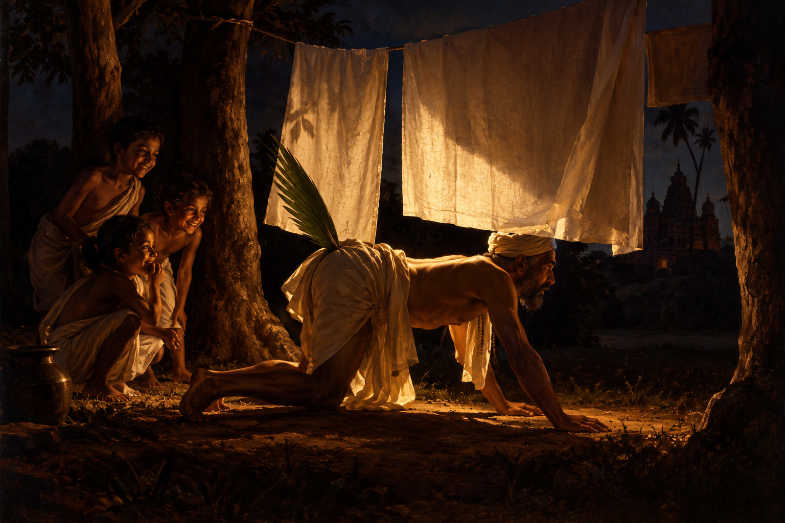

Les quatre brahmes fous : Le premier brahme

Voici ce que le premier brahme eut à dire :
Comme vous pouvez le constater, je suis vêtu de haillons.
L’histoire que je vais vous raconter va vous faire comprendre pourquoi.
Un riche marchand d'étoffes, très généreux envers les brahmes, m'avait un jour fait cadeau de deux pièces de toile magnifiques. Je les montrai fièrement à tous mes confrères, qui me félicitèrent et m’assurèrent que ce cadeau était la récompense de bonnes actions d’une vie antérieure.
Avant de les porter, je les lavai selon l'usage, pour les purifier des souillures laissées par les mains du tisserand et du marchand. Puis je les suspendis aux branches d'un arbre pour les faire sécher.
Un chien, surgi d’on ne sait où, passa dessous ; comme je n'avais pu voir s’il avait touché mes toiles, j'interrogeai mes enfants, qui jouaient non loin de là.
Hélas, ils n'avaient rien vu.
Comment savoir si le chien avait souillé mes toiles ?
Après mûre réflexion, j'imaginai ceci : me mettre à quatre pattes, de manière à être aussi haut que le chien, et passer dans cette posture sous mes toiles.
Ce que je fis.
– Ai-je touché les toiles avec mon dos ? demandai-je à mes enfants, qui m'observaient, les yeux grands ouverts.
– Non, me répondirent-ils tous en choeur.
En entendant cela, je bondis de joie.
Mais un doute m’assaillit très vite : le chien avait une queue.
Dressée, celle-ci pouvait très bien avoir touché mes toiles et les avoir souillées.
Que faire ? J’attachai à mon postérieur une feuille de palmier aussi longue que la queue du chien, vérifiai qu'elle pointait bien vers le haut, puis repassai sous mes toiles.
– La feuille a touché ! La feuille a touché ! s'écrièrent mes enfants, enchantés par ce nouveau jeu.
J’arrachai la feuille, la jetai à terre et la piétinai furieusement.
Il ne faisait plus aucun doute que mes toiles étaient souillées.
Empli de désespoir, je décrochai mes toiles, les déchirai en menus morceaux et maudis mille fois le chien, son maître et l’univers tout entier.
Ma mésaventure se répandit dans toute la région, et tout le monde me traita bientôt d'insensé.
– Ne pouvais-tu pas les laver une seconde fois pour enlever la souillure ? me disait-on.
– Il fallait les donner aux pauvres ! ajoutait un autre.
– Qui voudra te faire cadeau de vêtements désormais ? demandait un troisième.
Et c’est pourquoi je suis, depuis ce temps-là, vêtu de haillons.
Lorsqu'il eut fini son histoire, un des auditeurs lui dit :
– Il semble, à vous entendre, que vous soyez passé maître dans l’art de marcher à quatre pattes ?
– Oh ! oui, reprit-il, voyez donc…
Et le brahme se mit à se déplacer dans cette posture, la tête bien haute et bien droite.
Toute l'assemblée éclata de rire.
– Cela suffit, dit alors le juge. Ce que vous venez de raconter et ce que nous venons de voir plaident en votre faveur, mais voyons ce qu’ont à dire vos adversaires.
Il fit signe au brahme suivant de parler…
Conte indien adapté par Frodric, d’après une traduction de l’abbé Dubois
Échos
Cette histoire vous en a-t-elle rappelé une autre ? Vous pouvez me la raconter ici.